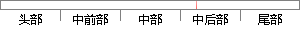

a_j是权值因子，其中的任意一个单高斯分布N(x;
片段位置图

相似结果|
相似片段 1：的时间复杂度是输入长度的多项式。3．2．1整数格上的高斯分布对任意的Z∈Z，以c∈时为中心，S>0为伸缩因子整数格上的高斯测度为％(z)2筹，其中刚z)=沙胁利用命题3．1，Gentry等[12]i正
相似片段 2：，则有Y=wrX=wrAs=zrs。因此Y为s，的一个线性组合，z，给出其权因子。因为任意两个随机变量的和通常比两个随机原变量更趋向高斯分布，故zrs比任何s，更趋向高斯分布。因此可将W看作是最大化非
相似片段 3：通常比任意两个随机原变量更倾向高斯分布。为了简化，假设所有独立成分服从相同的分布。为了估计其中的一个独立成分，考虑 ix 是 T i iiy w x w x= =∑ 的线性组合，这里w是一个待定的向量
相似片段 4：的方差为1／M，伯努利分布的幅度为l／√M。对于高斯分布，我们往往先产生一个服从i．i．d标准高斯分布的随机矩阵，然后通过对列向量作规范正交化得到观测矩阵。同时，M还需要满足M=CKlogN《N，C≥l (2．13)其中C是过采样因子。
相似片段 5：，该像素点均不符合，就定义一个优先级最低的高斯分布，其均值就是该像素点的值，方差为任意较大数。当新的像素点与其中的一个高斯分布匹配时，就需要更新处理混和高斯模型的参数，Ⅳ个高斯分布的优先级权重的更新
相似片段 6：偏离高斯分布。在独立分量分析的模型中，观测信号缸助是由m个独立的源信号线性混合而成，因此它比其中任意一个源信号更加趋于高斯分布。如果能够找到一个向量W作用于混合信一13一号霸幼，使得变换后的结果尽量偏离高斯分布，即非高斯最大化，那么得到的就是其中的一个源信号。
|
※ 片段修改建议 ※
近似词参考：- 其中：此中 个中
- 任意：肆意 随便 随意率性 恣意
系统自动生成语句：a_j是权值因子，此中的肆意一个单高斯分布N(x;
注：本片段修改建议为系统自动生成，仅供参考。